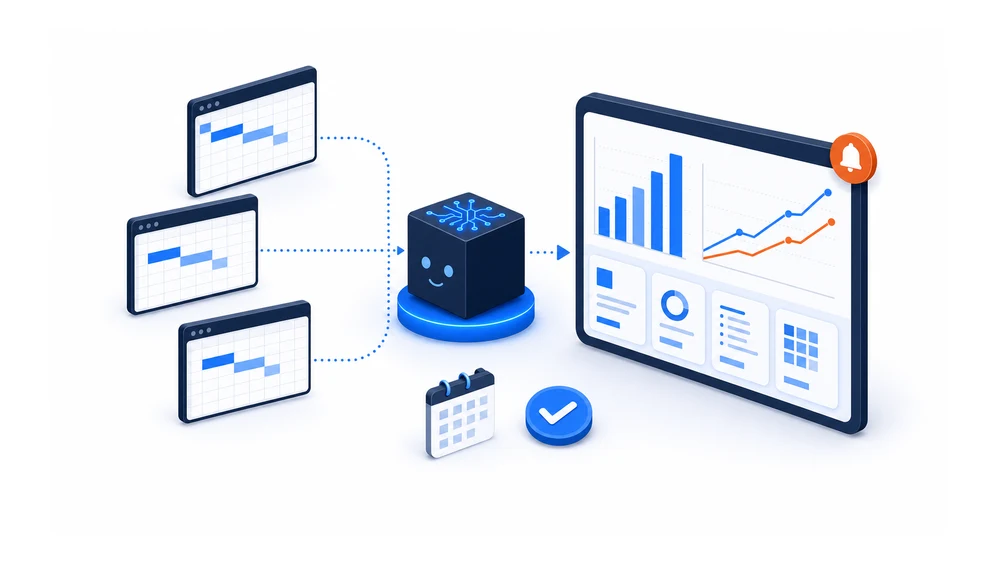
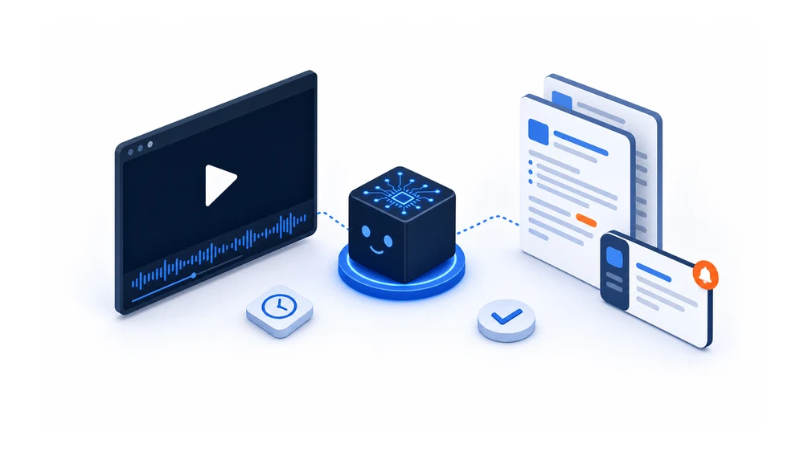
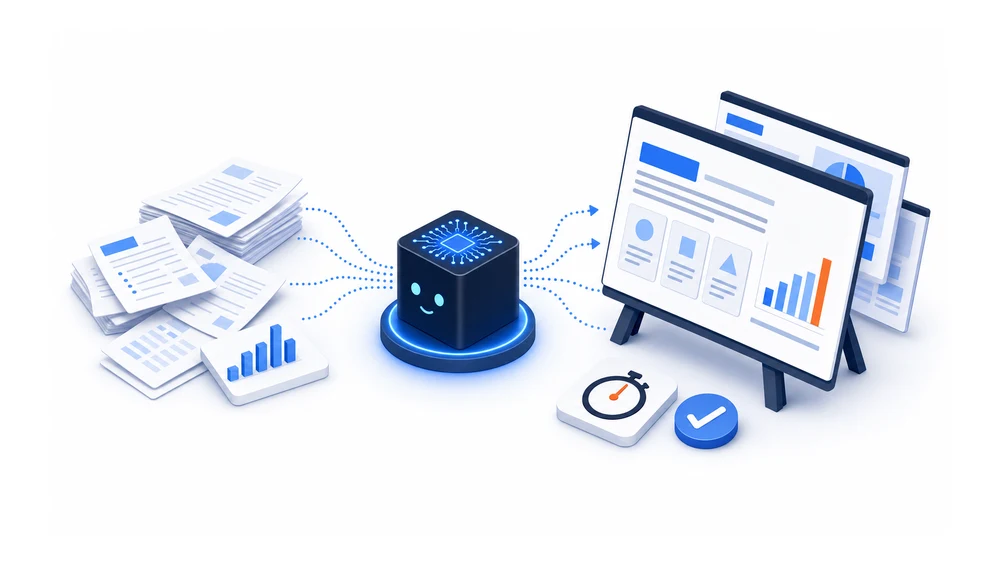
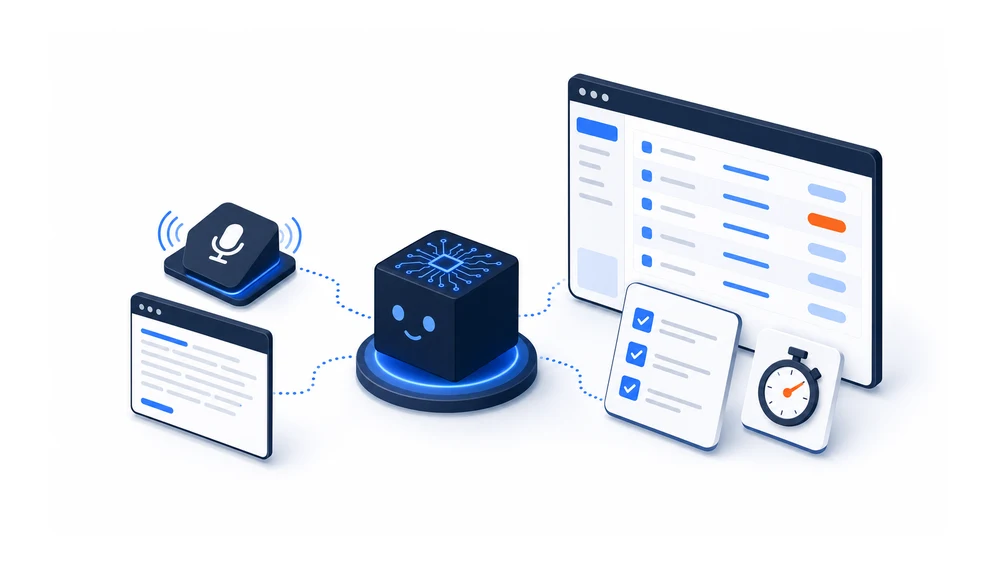
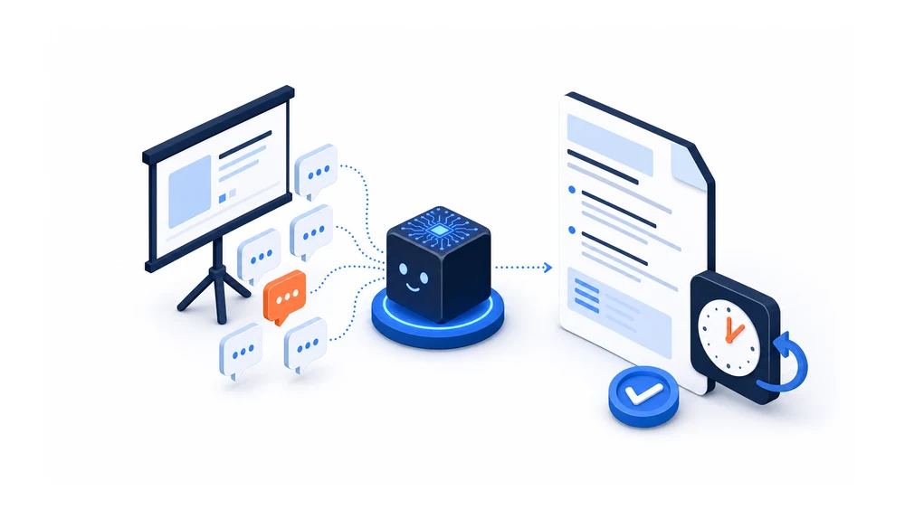
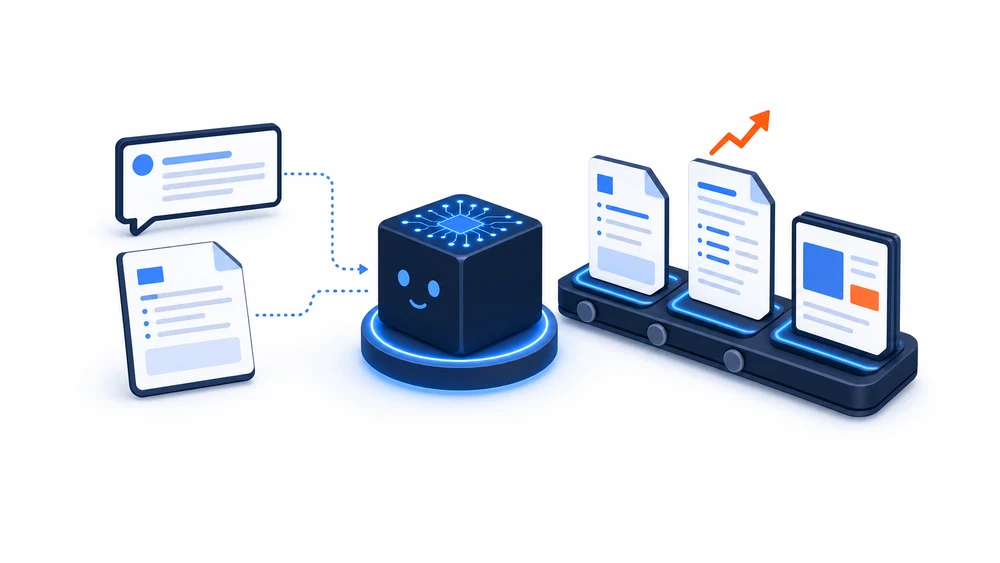
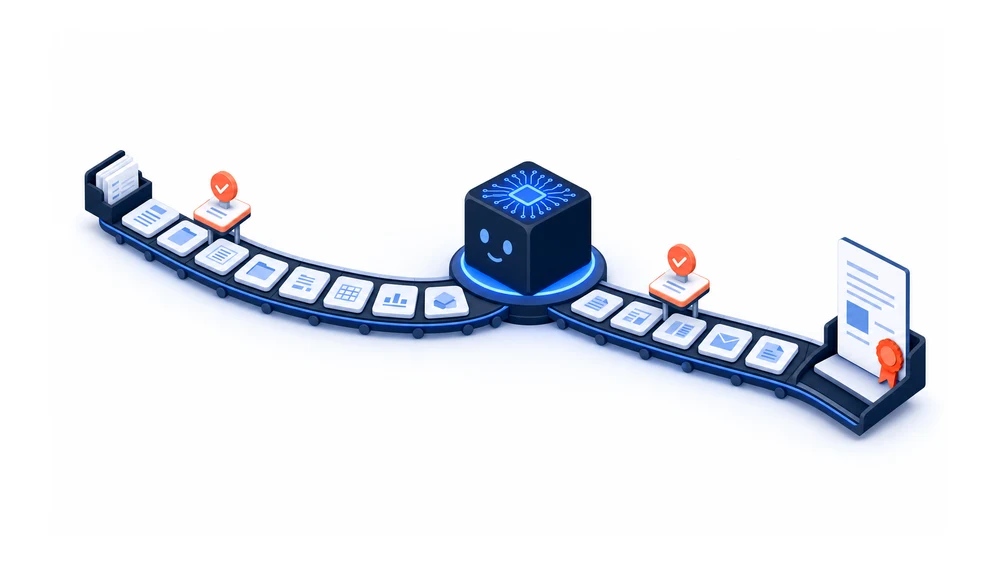

Cases
事例
1件1ページ。課題、変えたこと、60秒のデモ、結果まで載せています。
9件
業務

60秒デモ
売上集計を自動化し、毎日250分の転記を0分に
案件ごとにシートが分散し、コスト超過も売上未達も翌月まで分からない
毎日の転記作業250分→0分
年240万円分・960時間の削減

60秒デモ
議事録を書く仕事をなくし、会議中は議論に集中する
議事録を、まだ人間がタイピングしている
議事録の作成工数会議のたび→100%削減

60秒デモ
資料の骨子を5分で。月2,000時間の資料作成を500時間に
資料作成が特定の人に集中している
資料作成の工数（組織全体）月2,000時間→月500時間
年1,500万円分の削減

60秒デモ
Claude Code の研修教材31単元を、設計から5日で形にする
研修やマニュアルを作りたいが、まとまった時間が取れず後回しになる
設計から5日で形に31単元

面談1件の記録を20分から約4分に。顧客のNotionに業務ごと実装
面談のたびに記録を書き起こし、聞く質問も担当者ごとに変わる
面談1件の記録20分→約4分

レクチャーの疑問を、次回ではなく当日のうちに返す
研修やレクチャーをやりっぱなしにして、受講者の疑問が次回まで放置される
疑問が解けるまで次回→当日

60秒デモ
カレンダーに予定を入れるだけ。稼働時間の集計は0分
何に何時間使ったか、分からない
月次の工数集計手で集計→0分

「商談終わった」の一言で、営業台本と資料が育つ
商談後の事務作業が溜まる
商談後の分析→台本→資料一言で自動

資料づくり12工程のうち、人がやるのは2回だけ
AIに任せても、結局レビューで時間が溶ける
承認と、最後の目視12工程 → 人は2回